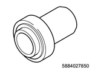
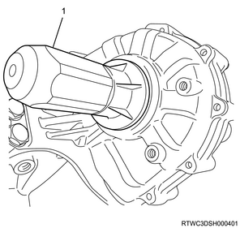
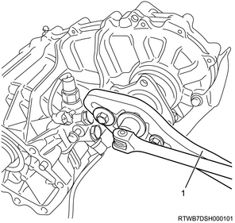
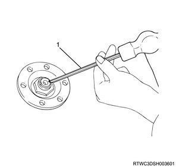
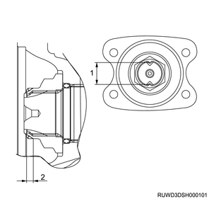

Front output shaft oil seal installation (All models)
1. Front output shaft oil seal installation
Caution
- Clean the installation section of the oil seal and its circumference.
- Make sure that there is no burr at the oil seal installation section.
- Use a new oil seal.
1. Apply the oil to the front output shaft oil seal.
Note
- Apply the recommended oil or equivalent to the outside of the front output shaft oil seal.
2. Apply the grease to the front output shaft oil seal.
Note
- Apply BESCO L2 grease or equivalent to the oil seal lip.
3. Install the front output shaft oil seal to the transfer case using special tool.
Note
- Use a oil seal installer.
Caution
- Do not damage the lip area of the oil seal when firmly fitting.

SST: 5-8840-2785-0 - oil seal installer

- Oil seal installer
2. Front companion flange installation
1. Apply the oil to the O-ring.
Caution
- Use a new companion flange O-ring.
Note
- Apply the recommended oil or equivalent to the companion flange O-ring and install it to the front output shaft.
2. Install the front companion flange to the output shaft.
Note
- Fix the flange by using a special tool.

SST: 5-8840-0133-0（J-8614-11） - flange holder
Note
- Install a new front companion flange end nut and tighten it to the specified torque.
Tightening torque： 137 N・m { 14.0 kgf・m / 101 lb・ft }

- Flange holder
Note
- Crimp the front companion flange end nut using the special tool.

SST: 5-8840-2293-0 - end nut lock punch

- End nut punch

- Maximum value: 26 mm {1.02 in}
- Minimum value: 4 mm {0.16 in}
3. Transfer oil filling
1. Install the drain plug to the transfer case.
Caution
- Use new O-rings.
Tightening torque： 39 N・m { 4.0 kgf・m / 29 lb・ft }
2. Remove the filler plug from the transfer case.
3. Replenish the transfer assembly with the transfer oil.
Note
- Replenish with the recommended oil or equivalent.
： 1.3 L { 0.34 US gal / 0.29 Imp.gal } Reference value
4. Install the filler plug to the transfer case.
Note
- Replace the filler plug and tighten at the specified torque.
Caution
- Use new O-rings.
Tightening torque： 39 N・m { 4.0 kgf・m / 29 lb・ft }
4. Front propeller shaft assembly installation
5. Battery ground cable connect
1. Lower vehicle using the jack.
2. Connect the battery ground cable to the battery.